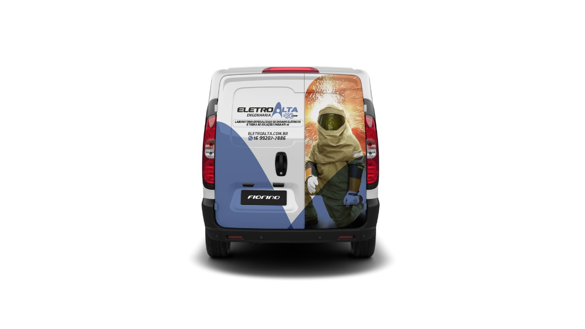

Ensaios Dielétricos em EPI, EPC e Ferramental Conforme a Nova NR-10
A nova NR-10 enquadra a ausência de ensaios e testes de isolação elétrica como condição de Grave e Iminente Risco (GIR), podendo ensejar embargo ou interdição imediatos pela Inspeção do Trabalho, nos termos da Portaria MTE nº 737/2026.
Ensaios dielétricos são procedimentos obrigatórios, conforme a Portaria MTE nº 737/2026, destinados a verificar a integridade da isolação elétrica de equipamentos, ferramentas, dispositivos, EPIs e EPCs usados em serviços com eletricidade. A não realização desses ensaios pode caracterizar condição de Grave e Iminente Risco (GIR), permitindo embargo ou interdição imediatos da atividade — sem necessidade do rito processual da NR-3.
- Obrigatoriedade expressa: o item 10.14.4 da nova NR-10 lista os equipamentos sujeitos a ensaio dielétrico — isolação para média/alta tensão, luvas e mangas isolantes, EPCs de baixa tensão.
- Periodicidade hierárquica: o item 10.14.4.1 define o menor intervalo entre norma técnica, recomendação do fabricante e critério do PLH — com piso anual na ausência de previsão.
- Consequência máxima: a ausência de ensaios passa a integrar o capítulo 10.16 (Grave e Iminente Risco), dispensando o rito da NR-3 para embargo ou interdição.
- Documentação obrigatória: os relatórios de ensaio devem estar sempre disponíveis à fiscalização e, quando aplicável, integrar o PIE sob responsabilidade de PLH.
- Vigência: a Portaria foi publicada em 01/06/2026 no DOU, com vigência geral a partir de 01/06/2027 — 12 meses de transição.
- Validade jurídica: a ART do PLH responsável é o elemento que confere defensabilidade técnica e jurídica ao laudo perante fiscalização, seguradoras e litígio trabalhista.
A nova NR-10 dispensa o uso da metodologia da NR-3 para embargo ou interdição quando constatada a não realização de ensaios e testes de isolação elétrica em equipamentos, ferramentas, dispositivos isolantes, EPI e EPC. A caracterização da condição de Grave e Iminente Risco permite à Inspeção do Trabalho adotar diretamente medidas administrativas cabíveis, incluindo embargo ou interdição, conforme a situação constatada durante a fiscalização.
NR-10, Capítulo 10.16 (GIR) — Portaria MTE 737/2026A principal mudança da nova NR-10 não é a exigência do ensaio em si.
É a transformação do ensaio dielétrico em evidência documental do sistema de gestão dos riscos elétricos da organização. A nova NR-10 não pede apenas que os ensaios sejam feitos — pede que os relatórios existam, estejam atualizados e estejam disponíveis a qualquer momento para a fiscalização. O ensaio virou um documento de governança, não apenas um procedimento de segurança.
Isso muda a lógica de contratação. Empresas que tratam os ensaios como rotina de SST continuarão comprando o serviço mais barato disponível. Empresas que compreenderam a nova NR-10 estão buscando um parceiro técnico capaz de integrar os laudos ao PIE, emitir ART com responsabilidade técnica real e sustentar a evidência documental em caso de fiscalização, acidente ou litígio trabalhista.
— Eng. Glauber Aparecido Maurin · CREA-SP nº 5061860869 · Engenheiro Eletricista e Responsável Técnico da EletroAlta Engenharia.
Até aqui está o essencial para decidir. A partir daqui, o conteúdo aprofunda nos itens normativos, tabelas técnicas e evidências — útil para quem vai auditar, implementar ou validar com jurídico e engenharia. Se você já tem o que precisa, fale com um especialista.
O que mudou nos ensaios dielétricos NR-10 com a Portaria MTE 737/2026
A Portaria MTE nº 737/2026 representou uma virada técnica e regulatória significativa. Diferentemente do texto anterior, a nova NR-10 integra os ensaios dielétricos à estrutura de Gerenciamento de Riscos Ocupacionais (GRO), os eleva à condição de obrigação com consequência de GIR e os conecta diretamente à documentação obrigatória do PIE.
A organização deve submeter a ensaios dielétricos:
(a) os equipamentos, ferramentas e dispositivos que possuam isolação elétrica destinados ao trabalho com média e alta tensão;
(b) luvas e mangas isolantes e equipamentos de proteção coletiva isolantes destinados ao trabalho com baixa tensão;
(c) outros equipamentos, conforme previsto em regulamentação ou norma técnica.
O ensaio deve ser realizado no menor intervalo previsto dentre: regulamentações existentes, recomendações dos fabricantes, critérios a serem desenvolvidos pelo PLH da organização — e, na ausência de previsão, anualmente.
Organizações que possuem trabalhadores autorizados devem manter relatórios dos testes de isolação elétrica realizados em equipamentos, ferramentas, dispositivos, EPI e EPC. Quando aplicável, essa documentação é organizada na forma de Prontuário das Instalações Elétricas (PIE), conforme o item 10.15.6, sob responsabilidade de PLH.
O item 10.16.1 dispensa o uso da metodologia da NR-3 (Embargo e Interdição) quando constatadas situações específicas de GIR, entre as quais a não realização de ensaios e testes de isolação elétrica em equipamentos, ferramentas, dispositivos isolantes, EPI e EPC. Esta é a consequência mais grave prevista na nova norma para a área de EPIs e ferramental elétrico.
Adicionalmente, o item 10.12.9 determina que os ensaios, os testes elétricos laboratoriais ou de campo e o comissionamento de instalações elétricas devem atender ao capítulo 10.14 desta NR, sob responsabilidade de PLH e executados por profissional autorizado.
Nota de rastreabilidade técnica: a numeração de itens e alíneas acima reflete a redação consolidada da Portaria MTE nº 737/2026 disponível em bases de legislação trabalhista no momento desta revisão. Recomenda-se a verificação do Anexo integral publicado no Diário Oficial da União antes de uso em peças jurídicas ou auditorias formais.
NR-10 anterior × nova NR-10: quadro comparativo direto
| NR-10 anterior | Nova NR-10 2026 |
|---|---|
| Ensaios citados genericamente. | Obrigatoriedade expressa no item 10.14.4. |
| Periodicidade pouco definida. | Hierarquia definida pelo item 10.14.4.1. |
| Fiscalização baseada na NR-3. | Dispensa da metodologia da NR-3 para hipóteses de GIR. |
| Consequências indiretas. | Possibilidade de embargo ou interdição por GIR (capítulo 10.16). |
| Relatórios tratados como documentos complementares. | Relatórios passam a integrar a documentação obrigatória (item 10.15.4). |
O que são ensaios dielétricos
Ensaio dielétrico é o procedimento técnico que aplica tensão elétrica controlada em um equipamento isolante — luva, manga, bastão, ferramenta, tapete, cobertura — para verificar se o material ainda mantém sua capacidade de isolação. O resultado determina se o equipamento está apto ou inapto para uso nas condições de tensão previstas.
Capacidade máxima de um material isolante suportar tensão elétrica sem sofrer ruptura. Expressa em kV/mm. Quando violada, ocorre perfuração do material.
Corrente que flui através do material isolante sob tensão aplicada. Valores acima dos limites estabelecidos pelas normas ou critérios de ensaio podem indicar degradação ou comprometimento das propriedades isolantes — mesmo sem ruptura visível.
Falha completa do isolamento quando a tensão aplicada supera a rigidez do material. Resulta em condução elétrica pelo EPI — e em choque elétrico no usuário.
Tensão máxima que o equipamento suporta durante o tempo de ensaio sem falha. É a evidência técnica que valida a aptidão do EPI para a classe de tensão de uso.
No ensaio, aplica-se tensão AC ou DC em nível superior à tensão de operação do equipamento — conforme especificado pela norma técnica aplicável — durante um tempo determinado. A medição simultânea da corrente de fuga permite avaliar tanto a integridade do material quanto a tendência de degradação ao longo dos ciclos de ensaio.
Por que um EPI certificado pode falhar
A certificação de fábrica — expressa no CA (Certificado de Aprovação) — atesta que o produto atendeu às normas técnicas no momento da fabricação. Ela não garante a condição do isolamento após meses ou anos de uso operacional. Esta é a distinção técnica mais crítica e a mais sistematicamente ignorada.
O material dielétrico — borracha natural, borracha sintética, materiais poliméricos — sofre degradação progressiva e irreversível por múltiplos mecanismos simultâneos:
Ver os 6 mecanismos de degradação Ver mais ▾
Exposição ao calor altera as cadeias poliméricas, reduzindo elasticidade e rigidez dielétrica. Borrachas perdem propriedades isolantes antes de apresentar danos visíveis.
Radiação ultravioleta e ozônio presentes em ambientes industriais degradam a superfície do material, gerando microfissuras — invisíveis a olho nu, condutoras sob tensão.
Óleos, solventes, produtos químicos e umidade penetram no material e alteram a resistividade. Contaminação superficial pode criar caminhos condutores.
Dobras, impactos, compressão e tração repetidos causam microfraturas na estrutura interna do isolante. O dano não é visível externamente mas compromete a rigidez dielétrica.
Armazenamento inadequado ou uso em ambientes úmidos permite absorção de umidade pela borracha, reduzindo drasticamente a resistência dielétrica do material.
Mesmo sem uso, o elastômero envelhece. Luvas armazenadas além do prazo de fabricante podem falhar sem qualquer exposição ao trabalho elétrico.
O ponto crítico de gestão de risco: nenhum desses mecanismos de degradação produz sinal visual confiável. Um EPI pode parecer perfeito — sem rasgos, manchas ou deformações — e apresentar corrente de fuga dez vezes acima do limite normativo. Somente o ensaio dielétrico revela esse estado.
Quais equipamentos exigem ensaios dielétricos NR-10
O item 10.14.4 da Portaria MTE 737/2026 define três categorias obrigatórias. As normas técnicas nacionais e internacionais detalham os requisitos por tipo de equipamento:
Ver tabela completa — 11 tipos de equipamento, periodicidade e normas Ver mais ▾
| Equipamento | Tipo de Ensaio | Periodicidade | Normas de Referência |
|---|---|---|---|
| Luvas isolantes de borracha | Rigidez dielétrica AC + inspeção visual | Semestral | IEC 60903ASTM D120NBR 16295 |
| Mangas isolantes de borracha | Rigidez dielétrica AC | Conforme norma + PLH | IEC 60984NBR 10623 |
| Ferramentas manuais isoladas (chaves, alicates, cortadores) | Ensaio elétrico + inspeção funcional | Anual ou após queda/impacto | IEC 60900NBR 9699 |
| Varas de manobra e bastões isolantes | Rigidez dielétrica | Anual | IEC 60855-1NBR 14540NBR 11854 |
| Tapetes isolantes | Isolação elétrica | Anual | IEC 61111 |
| Coberturas isolantes flexíveis | Rigidez dielétrica | Conforme norma + PLH | IEC 61112 |
| Coberturas rígidas isolantes | Rigidez dielétrica | Anual | IEC 61235 |
| Escadas isolantes de fibra | Isolação elétrica | Anual | IEC 61478 |
| Banquetas isolantes | Isolação elétrica | Anual | IEC 61478 |
| Detectores de tensão | Ensaio funcional e elétrico | Antes do uso + Anual | IEC 61243 |
| Equipamentos e ferramentas para média e alta tensão | Conforme norma aplicável à tensão | Conforme norma + PLH | IEC e NBR aplicáveis à tensão |
As periodicidades indicadas refletem o menor intervalo previsto pelas normas técnicas internacionais adotadas no Brasil — conforme determina o item 10.14.4.1 da nova NR-10. Podem ser reduzidas por PLH conforme condições de uso, ambiente e histórico de falhas.
Periodicidade dos ensaios dielétricos — entendendo o item 10.14.4.1
A nova NR-10 não fixou um único intervalo universal. O item 10.14.4.1 instituiu uma hierarquia de critérios: o ensaio deve ser realizado no menor intervalo previsto dentre quatro fontes, nessa ordem de prioridade:
- Regulamentações existentes — normas técnicas ABNT/IEC aplicáveis ao equipamento
- Recomendações dos fabricantes — manual do produto
- Critérios do PLH da organização — engenheiro responsável pelo programa interno
- Na ausência de qualquer previsão: anualmente
Na prática, as normas técnicas IEC e ABNT estabelecem as periodicidades mais curtas para os EPIs de maior criticidade. Isso significa que, para luvas isolantes, o intervalo de referência é semestral (IEC 60903 / NBR 16295) — independente de qualquer critério interno ou recomendação do fabricante, se estes forem mais longos.
Condições que exigem redução do intervalo
O PLH deve definir intervalos menores quando houver:
- Ambiente com UV intenso, ozônio, calor ou umidade elevada
- Contato frequente com óleos, solventes ou produtos químicos
- Uso intensivo ou contínuo em múltiplos turnos
- Histórico de reprovações em ensaios anteriores
- Impactos, quedas ou esforços mecânicos identificados
- Qualquer suspeita de degradação — mesmo visual
Tensões de ensaio das luvas isolantes por classe
As luvas isolantes de borracha são classificadas por classes de tensão conforme IEC 60903 / NBR 16295. Cada classe define a tensão máxima de uso e a tensão de ensaio aplicada no laboratório. Este dado é fundamental para seleção, aquisição e validação técnica — e é informação que todo engenheiro de segurança e gerente de manutenção deve dominar:
| Classe | Tensão Máxima de Uso (CA) | Tensão de Ensaio CA | Tensão de Ensaio CC | Aplicação típica |
|---|---|---|---|---|
| 00 | 500 V AC / 750 V DC | 2.500 V AC | 10.000 V DC | Trabalho em instalações de BT até 500 V |
| 0 | 1.000 V AC / 1.500 V DC | 5.000 V AC | 20.000 V DC | Trabalho em instalações de BT até 1.000 V |
| 1 | 7.500 V AC / 11.250 V DC | 10.000 V AC | 40.000 V DC | Trabalho em MT até 7,5 kV |
| 2 | 17.000 V AC / 25.500 V DC | 20.000 V AC | 50.000 V DC | Trabalho em MT até 17 kV |
| 3 | 26.500 V AC / 39.750 V DC | 30.000 V AC | 60.000 V DC | Trabalho em AT até 26,5 kV |
| 4 | 36.000 V AC / 54.000 V DC | 40.000 V AC | 70.000 V DC | Trabalho em AT até 36 kV |
Fonte: IEC 60903:2014 / ABNT NBR 16295. Os valores de tensão de ensaio AC são aplicados durante 1 minuto para verificação dielétrica de aprovação. O ensaio DC é alternativa ao AC quando especificado. A seleção incorreta da classe de luva para a tensão de trabalho configura por si só condição de risco.
O que reprova um EPI no ensaio dielétrico
A reprovação em ensaio dielétrico pode ocorrer por falha elétrica direta, por falha mecânica com comprometimento dielétrico ou por não conformidade com critérios da norma. Os principais motivos de reprovação são:
- Ruptura dielétrica sob tensão de ensaio
- Corrente de fuga acima do limite normativo
- Perfuração do material durante o ensaio
- Microfissuras que geram corrente de fuga instável
- Rasgos ou cortes detectados na inspeção visual
- Contaminação com material condutor incorporado
- Deformação permanente que compromete a classe
- Vencimento do prazo sem ensaio periódico
- Identificação apagada ou ilegível
- Uso em tensão superior à classe do equipamento
- Suportar a tensão de ensaio pelo tempo normativo
- Corrente de fuga dentro do limite da norma
- Sem perfuração ou ruptura durante o teste
- Integridade física confirmada na inspeção visual
- Marcações de classe e fabricante legíveis
- Ausência de contaminação ou degradação superficial
- Data de fabricação dentro da vida útil
- Rastreabilidade metrológica do instrumento de ensaio
- Laudo emitido por PLH com ART
- Certificado individual rastreável por número de série
EPI reprovado no ensaio dielétrico deve ser inutilizado imediatamente — perfuração visível, marcação de inutilização e segregação do estoque ativo. A manutenção de EPI reprovado em uso é, pela nova NR-10, situação passível de enquadramento como GIR.
A empresa pode ser interditada por não realizar os ensaios?
Sim — e a nova NR-10 tornou esse caminho mais direto e mais rápido do que em qualquer versão anterior. Compreender o mecanismo técnico-jurídico é fundamental para qualquer gestor industrial:
O item 10.16.1 dispensa o uso da metodologia prevista na Norma Regulamentadora nº 03 (NR-3) — Embargo e Interdição — para imposição de medida de embargo ou interdição quando constatada condição de Grave e Iminente Risco, entre as quais se inclui:
não realização de ensaios e testes de isolação elétrica em equipamentos, ferramentas, dispositivos isolantes, equipamentos de proteção individual e coletivo, conforme determina esta NR.
Na linguagem prática da fiscalização do trabalho, isso significa: o Auditor Fiscal que constata ausência dos ensaios ou dos relatórios correspondentes pode adotar medidas administrativas, incluindo embargo ou interdição, conforme a situação constatada, sem necessidade de cumprimento do rito processual da NR-3.
Quais são as consequências imediatas
- Embargo: paralisação imediata das atividades no local ou equipamento identificado
- Interdição: impedimento de uso da máquina, setor ou instalação elétrica
- Auto de infração: penalidade administrativa com base na NR-10 e na CLT
- Passivo trabalhista: em caso de acidente, a ausência de ensaios configura nexo causal documentado
- Responsabilidade dos gestores: exposição por omissão no cumprimento de obrigação legal explícita
- Possibilidade de questionamento de cobertura de seguro: descumprimento normativo pode ser invocado por seguradoras conforme cláusulas contratuais específicas
As consequências jurídicas e contratuais listadas dependem de avaliação caso a caso por profissionais habilitados (advogado trabalhista, corretor de seguros). Este conteúdo tem finalidade técnica e informativa, não constituindo parecer jurídico.
O que um fiscal do trabalho pode solicitar
Com base nos itens do capítulo 10.15 (documentação) e 10.16 (GIR) da nova NR-10, a documentação tipicamente exigida na fiscalização inclui:
- Relatórios dos testes de isolação elétrica (item 10.15.4) — por equipamento, com identificação, número de série e resultado
- ART (Anotação de Responsabilidade Técnica) de cada ensaio — PLH responsável identificado
- Rastreabilidade metrológica dos instrumentos utilizados (calibração RBC)
- Certificados individuais dos equipamentos ensaiados com data do próximo ensaio
- Comprovação de que o intervalo entre ensaios atende ao menor prazo normativo aplicável
- PIE atualizado (quando aplicável) com os relatórios de ensaio integrados
- Documentação dos EPIs reprovados: segregação, inutilização e substituição
- Lista de equipamentos em uso ativo com status de ensaio vigente
- Evidência de que equipamentos com ensaio vencido foram retirados de uso
- Identificação do PLH responsável pelo programa de ensaios da organização
A documentação deve estar disponível à fiscalização sem necessidade de aviso prévio. Ausência de qualquer item desta lista é evidência de não conformidade.
Diferença entre inspeção visual e ensaio dielétrico
Esta distinção é técnica fundamental — e é frequentemente mal compreendida por equipes de SST e gestores de manutenção. A nova NR-10 reconhece implicitamente essa limitação ao tornar o ensaio dielétrico uma obrigação autônoma, independente de qualquer inspeção visual.
- Detecta apenas danos superficiais visíveis
- Não revela microfissuras internas no isolante
- Não mede corrente de fuga nem rigidez dielétrica
- Não detecta degradação por UV/ozônio em estágio inicial
- Não identifica contaminação interna absorvida
- Não substitui o ensaio em nenhuma circunstância
- Ruptura dielétrica mesmo sem dano visível
- Corrente de fuga acima dos limites de segurança
- Degradação interna por envelhecimento térmico
- Efeito de contaminação absorvida no material
- Perda progressiva de rigidez dielétrica por uso
- Confirma aptidão real para a classe de tensão declarada
A inspeção visual deve ser realizada antes de cada uso do EPI elétrico — é requisito operacional. O ensaio dielétrico é o requisito de conformidade periódico. São complementares, não alternativos. A inspeção visual é condição de segurança imediata; o ensaio dielétrico é a validação técnica da capacidade protetiva do equipamento.
Laboratório móvel de ensaios dielétricos — EletroAlta na sua planta
Conheça como executamos os ensaios com rastreabilidade completa, ART e integração ao seu programa de gestão de riscos elétricos conforme a nova NR-10.

Realizamos todos os ensaios diretamente nas instalações do cliente. Sem logística de envio, sem período de indisponibilidade dos EPIs, sem interrupção de operação.
Cada relatório de ensaio é acompanhado de ART emitida por Eng. Glauber Maurin, engenheiro eletricista com CREA ativo. Validade jurídica integral perante fiscalizações e seguradoras.
Todos os instrumentos de ensaio são calibrados e rastreados à RBC — Rede Brasileira de Calibração. Rastreabilidade metrológica comprovada para auditorias ISO 45001.
Os relatórios são estruturados para integração direta ao PIE e ao Programa de Gestão de Riscos Elétricos da organização — conforme os capítulos 10.14 e 10.15 da nova NR-10.
Contratos corporativos de rotina para indústrias de médio e grande porte. Agendamento programado, grandes volumes, emissão imediata de certificados individuais por equipamento.
Procedimentos estruturados conforme os novos requisitos dos itens 10.14.4, 10.14.4.1, 10.15.4 e 10.12.9 da Portaria MTE 737/2026 — com documentação antecipada à vigência de 2027.
Resumo executivo sobre ensaios dielétricos na nova NR-10
Os ensaios dielétricos NR-10 são testes elétricos destinados à verificação da integridade da isolação elétrica em equipamentos, ferramentas, EPIs e EPCs utilizados em serviços com eletricidade.
Conforme a Portaria MTE nº 737/2026, a ausência desses ensaios pode caracterizar condição de Grave e Iminente Risco (GIR), sujeitando a organização a embargo ou interdição.
A periodicidade dos ensaios deve respeitar o menor intervalo previsto pelas regulamentações existentes, recomendações dos fabricantes e critérios definidos pelo Profissional Legalmente Habilitado (PLH).
Os relatórios dos ensaios devem integrar a documentação prevista pela nova NR-10 e o PIE quando aplicável.
FAQ — 20 perguntas técnicas sobre ensaios dielétricos e a nova NR-10
Fontes e referências normativas
Esta página cita exclusivamente normas e atos legais de domínio público. A relação abaixo permite verificação direta por fiscalização, auditoria ou terceiros interessados — prática de rastreabilidade documental recomendada para conteúdo técnico-regulatório.
- BRASIL. Ministério do Trabalho e Emprego. Portaria MTE nº 737, de 29 de maio de 2026. Aprova a nova redação da Norma Regulamentadora nº 10 (NR-10) — Segurança em Instalações Elétricas e Serviços em Eletricidade. Diário Oficial da União, Brasília, DF, 1 jun. 2026. Disponível em: in.gov.br/web/dou.
- IEC 60903:2014 — Live working — Gloves of insulating material.
- ABNT NBR 16295 — Equipamento de proteção individual — Luvas isolantes de borracha para trabalhos elétricos.
- ASTM D120 — Standard Specification for Rubber Insulating Gloves.
- IEC 60984 — Sleeves of insulating material for live working.
- ABNT NBR 10623 — Mangas isolantes de borracha para trabalhos elétricos.
- IEC 60900 — Live working — Hand tools for use up to 1 000 V AC and 1 500 V DC.
- ABNT NBR 9699 — Ferramentas manuais isoladas ou revestidas para trabalhos elétricos.
- IEC 60855-1 — Live working — Insulating foam-filled tubes and solid rods.
- ABNT NBR 14540 / NBR 11854 — Varas de manobra e acessórios isolantes para trabalhos elétricos.
- IEC 61111 — Live working — Insulating mats for electrical purposes.
- IEC 61112 / IEC 61235 — Live working — Insulating covers / Insulating tubes.
- IEC 61478 — Live working — Ladders of insulating material.
- IEC 61243 — Live working — Voltage detectors.
A numeração de itens da nova NR-10 referenciada nesta página corresponde à redação consolidada da Portaria MTE nº 737/2026 disponível em bases especializadas de legislação trabalhista no momento da última revisão (19/06/2026). Para uso em peças jurídicas, auditorias formais ou decisões de engenharia que dependam de precisão literal de alínea, recomenda-se confirmação direta no Anexo publicado no Diário Oficial da União.
Sua planta está em conformidade com a nova NR-10?
A EletroAlta realiza diagnóstico técnico confidencial dos seus programas de ensaios dielétricos e executa os testes diretamente nas suas instalações — com laboratório móvel, ART e rastreabilidade RBC.